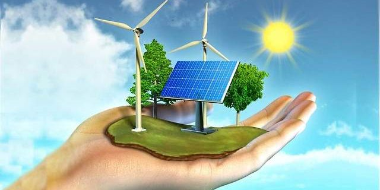
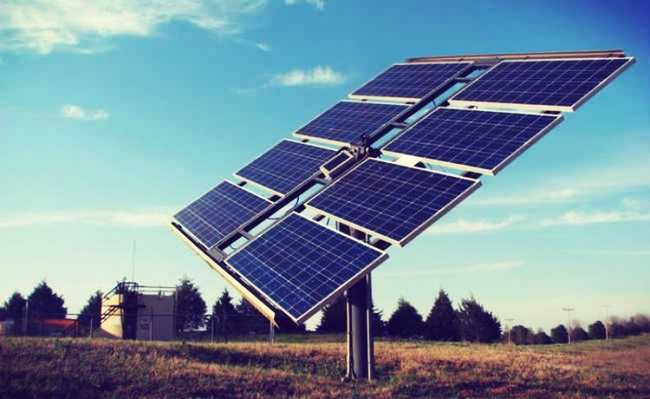
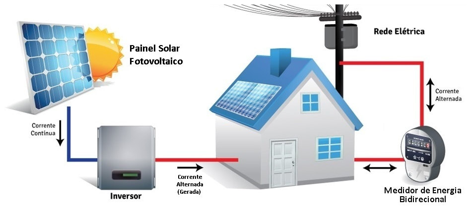

 É aquela que vem de recursos naturais, como por exemplo: o Sol, o Vento, a Chuva, as Marés, e calor. Por serem oriundas de recursos naturais, as Energias Renováveis são reabastecidas continuamente em escala de tempo humana; As energias renováveis podem substitui os combustíveis convencionais como o petrólio e o carvão.
Porém, nem todo recurso natural é renovável, como o carvão, o Urânio e o Petróleo existem em quantidade limitada na natureza levando em comta a escala de tempo usada( a escala de tempo humana).
A energia alternativa é um termo usado para uma fonte de energia limpa (fonte de energia que não polui o meio ambiente) que é uma alternativa ao uso de combustíveis fósseis. Geralmente, isso indica energias que são não-tradicionais e de baixo impacto ambiental. O termo alternativo é usado para contrastar com combustíveis fósseis de acordo com algumas fontes. Energias alternativas não prejudicam o meio ambiente, uma distinção que as separa de energia renovável que pode ou não ter um impacto ambiental significativo.
clique aqui para saber mais do assunto
A energia eólica é gerada através da conversão de correntes de vento em
outras formas de energia com a emergia elétrica, usando turbinas eólicas. essa energia é considerada uma fonte de energia limpa,
renovável e sustentável.“surgiu” com a crise do petróleo, nos anos 70. Um pouco por toda a Europa foi-se sentindo
medo devido à escassez do petróleo, o que levou a procurar outras fontes de energia.
A primeira turbina de energia eólica do Brasil foi instalada em Fernando de Noronha em 1992. Dez anos depois, o governo criou o Programa de Incentivo às Fontes Alternativas de Energia Elétrica(Proinfa). Em 2015, está fonte de energia renovável está amplamente difundida no Brasil: Temos 254 usinas eólicas instaladas com uma capacidade total instalada de 6.39GW de potência.No Brasil, a primeira turbina de energia eólica foi instalada em Fernando de Noronha, em Pernambuco, em 1992. Na época, a geração de energia elétrica correspondia a 10% da energia gerada e consumida na ilha. Isso economizava 70 mil litros de óleo diesel por ano. Em fevereio de 2017, o Brasil atingiu 10,8 GW de energia eólica em operação, representando 7,1% da matriz elétrica brasileira, atingindo o 9º lugar na geração eólica no mundo. Com os parques atualmente em construção, estima-se que até 2020 o país terá aproximadamente 600 parques eólicos em operação, dos quais cerca de 30% foram desenvolvidos pela Casa dos Ventos. Esses parques terão capacidade instalada de 17,9 GW, e representarão em torno de 10% de toda a energia produzida no Brasil. O crescimento da fonte eólica no Brasil tem sido expressivo, mas se analisarmos seu potencial, ainda temos muito a explorar. Segundo estudos da Agência Nacional de Energia Elétrica (ANEEL), o Brasil tem potencial de 300 GW de geração eólica, o que corresponde a 2,2 vezes a matriz elétrica brasileira.
A energia do vento é transformada em energia elétrica através de um equipamento chamado turbina eólica (ou aerogerador), os quais incluem hélices que se movimentam com a velocidade do vento.
Um sistema eólico pode ser usado em três sistemas diferentes: Sistema isolado: sistemas que se encontram privados de energia elétrica proveniente da rede pública, sendo utilizados para abastecer certas regiões Sistema híbrido: sistemas que produzem energia elétrica em simultâneo com mais de uma fonte, nomeadamente painéis fotovoltaicos ou turbinas eólicas Sistema interligado à rede: sistemas que inserem a energia produzida por eles mesmos na rede elétrica pública A energia do vento pode, portanto, ser aproveitada e transformada em energia elétrica e mecânica.
Hoje em dia, a energia do vento é essencialmente aproveitada para produzir eletricidade. Esta transformação é conseguida através de aerogeradores. Os aerogeradores são colocados estrategicamente em zonas ventosas, que normalmente são em zonas de maior altitude. O vento forte é capaz de rodar as pás de uma turbina. Um aerogerador comunica com um eixo central e este, por sua vez, é acoplado a uma caixa multiplicadora (Gearbox) onde a velocidade de rotação é incrementada, segundo características específicas de cada fabricante. Os aerogeradores possuem um sistema capaz de controlar a velocidade do rotor de forma a manter uma velocidade estável com a variação da velocidade do vento. os mais elevados e for demasiado forte, impede a rotação muito rápida do aerogerador. O gerador ligado ao transmissor mecânico produz energia elétrica.
Uma concentração ou aglomerado de aerogeradores denomina-se de parque eólico, sendo utilizados para produzir energia elétrica, geralmente para alimentar localidades remotas e distantes da rede de transmissão. Existem dois tipos de parques eólicos, onshore e offshore, os parques eólicos onshore encontram-se localizados em terra ao largo da costa marítima ou no interior. Veja quais são os maiores parques eólicos onshore na Europa. Os parques eólicos offshore são parques onde os aerogeradores são instalados no mar.
clique aqui para saber mais
Energia solar é a energia proveniente da luz e do calor do Sol que é aproveitada e utilizada por meio de diferentes tecnologias, principalmente como o aquecimento solar, energia solar fotovoltaica, energia heliotérmica e arquitetura solar.
A luz solar e a energia solar são consideradas fonte de energia renovável e sustentável.A energia solar é uma forma limpa e sem danos a natureza de se gerar energia elétrica e por ser uma fonte de energia renovável baseada no sol a energia solar tem um grande aproveitamento como fonte de calor e luz sendo uma das mais aproveitáveis e promissoras energias no mundo.A energia do sol é considerada como inesgotável do ponto de vista humano. O potencial de energia solar é excepcional em comparação com todas as outras fontes de energia. Veja abaixo o potencial da energia solar em comparação com as outras fontes de energia. Ao lado direito da figura observamos o potencial total das fontes de energia não renováveis, ou seja, que provavelmente irão se esgotar algum dia, ao lado esquerdo vemos o potencial anual das energias alternativas que consideramos renováveis, ou seja, que se renovam anualmente.
São vários os benefícios econômicos da energia solar no BrasilCasas que possuem energia solar fotovoltaica instalada podem gerar a sua própria energia renovável e assim praticamente se livrar da sua conta de luz para sempre.
Sistemas fotovoltaicos valorizam a propriedade. Quanto mais energia solar instalada no Brasil menor é a necessidade de utilizarmos as usinas termoelétricas que são caras e, menor a inflação na conta de luz.
A indústria de energia solar no Brasil gera milhares de empregos todos os anos. Uma usina solar de 100MWp gera energia para 20.000 casas e evita a emissão de 175.000 toneladas de CO2 por ano.

Os painéis solares captam a luz do sol e geram a energia que é “transportada” até o inversor solar, responsável por converter a energia elétrica gerada para as características da nossa rede elétrica. A geração de energia ocorre por meio do efeito fotovoltaico.Durante o dia, os painéis solares (chamados de módulos fotovoltaicos) captam a luz do sol e geram energia. A incidência direta da radiação solar é muito importante para que as células fotovoltaicas apresentem a melhor eficiência na conversão da radiação solar em energia elétrica, pois, quanto mais luz direta o painel solar recebe, mais energia elétrica será gerada.Isto porque, o funcionamento das células fotovoltaicas que compõem os módulos é extremamente dependente da entrada das partículas de luz (os fótons) em seu interior.
O grande segredo é o posicionamento das placas solares de modo que recebam uma maior radiação solar direta, sem a interferência de sombras.O resultado disso é a liberação de corrente elétrica contínua, captada pelos filamentos condutores do módulo fotovoltaico.Essa corrente é então enviada para o inversor interativo, aparelho que transforma essa energia de corrente contínua para corrente alternada, que é o tipo utilizado em nossas residências ou empresas.Essa energia passa por um aparelho chamado inversor solar, responsável por converter essa energia para as características da rede elétrica local. Em outras palavras, a energia gerada pelo painel solar está em corrente contínua, abreviada pela sigla “CC” ou do termo em inglês Direct Current (DC), que é todo tipo de corrente que, quando percorrida em um circuito, não altera seu sentido de circulação.
Após o processo de conversão, o inversor entrega para consumo, energia elétrica em corrente alternada (CA), que possui essa nomenclatura, pois como o próprio nome já diz, porque altera o seu sentido de circulação dentro do circuito, periodicamente.
O tipo mais comum de corrente alternada é a onda senoidal. Dessa forma, uma das variáveis mais importantes que caracterizam uma onda senoidal é a frequência. No Brasil, a frequência adotada para os circuitos de corrente alternada é 60 Hz. Ou seja, em 1 segundo a onda completa 60 ciclos, com período de 16,67 milissegundos, cada.Depois de passar pelo inversor, a energia solar pode ser usada para alimentar qualquer aparelho da casa, como geladeiras, lâmpadas e aparelhos de ar condicionado, por exemplo, gerando economia na conta de luz.
clique aqui para saber maisTemos 2 definiçãoes do biomassa.Uma no ambito ecologoico e outra no abito energético Na getação de emergias o termo biomassa aglomera todos os derivados recentes de organismos vivos que são utilizados como combustíveis ou para a sua produção desses mesmos combustíveis.
Já no ponto de vista ecológico biomassa é a quantidade total da matéria viva existente em um ecossistema ou numa população quer animal quer vegetal. Estes dois conceitos estão por conseguinte interligados entre eles, embora sejam algo diferentes.
Para a definição de biomassa no contexto da geração de energia não são contabilizados os tradicionais combustíveis fósseis, apesar de estes serem também derivados do ramo vegetal e mineral (são exemplos carvão mineral do ramo vegetal e o petróleo e gás natural do ramo mineral), no entanto estes são resultado de várias transformações que requerem vários milhões de anos para acontecerem. A biomassa pode ser considerada um recurso natural renovável, contrariamente aos combustíveis fosseis.
Em 2018, havia 549 empreendimentos que exploravam fontes energéticas de origem de biomassa, com potência instalada de 14.548.593 KW, correspondente a 8,81% do total da matriz elétrica brasileira. No país cerca de 30% das necessidades energéticas é suprido pela biomassa sob forma de lenha para queima de cerâmicas, carvão vegetal para redução de ferro gusa em fornos das siderúrgicas e combustível sustentável para fabricas de cimento no nordeste.
O bagaço da cana também é bem utilizado para geração de vapor para produção de energia elétrica, usadas nas usinas de açúcar e álcool. O uso da biomassa no país auxilia na redução de desastres causados pelo desmatamento de recursos naturais, além de contribuir com o aumento da economia, geração de emprego e renda.
Uma série de reportagem exibida no mês de junho no Jornal Nacional da Rede Globo discute os novos rumos da energia elétrica no Brasil e como a biomassa contribui para o avanço do país.
Para saber mais clique aqui

A biomassa é utilizada na produção de energia a partir de processos como a combustão de material orgânico produzida e acumulada em um ecossistema Existem quatro formas de transformar a biomassa em energia:
Pirólise: através dessa técnica, a biomassa é exposta a supremas temperaturas sem a presença de oxigênio, mirando o acelerar da decomposição da mesma. O que sobra da decomposição é uma mistura de gases, líquidos (óleos vegetais) e sólidos (carvão vegetal);
Gasificação: assim como na pirólise, aqui a biomassa também é acalorada na ausência do oxigênio, originando como produto final um gás inflamável. Esse gás ainda pode ser filtrado, visando à remoção de alguns componentes químicos residuais.
A diferença básica em relação à pirólise é o fato de a gaseificação exigir menor temperatura e resultar apenas em gás; Combustão: aqui a queima da biomassa é realizada a altas temperaturas na presença abundante de oxigênio, produzindo vapor a alta pressão. Esse vapor geralmente é usado em caldeiras ou para mover turbinas. É uma das formas mais comuns hoje em dia e sua eficiência energética situa-se na faixa de 20 a 25%;
Co-combustão: essa prática propõe a substituição de parte do carvão mineral utilizado em urnas termoelétricas por biomassa. Dessa forma, reduz-se significativamente a emissão de poluentes. A faixa de desempenho da biomassa encontra-se entre 30 e 37%, sendo por isso uma escolha bem atrativa e econômica atualmente. comcluindo isso vamos falar sobre os materias que podem ser usados para gerar esse tipo de energia : A lenha é muito utilizada para produção de energia por biomassa – no Brasil, já representou 40% da produção energética primária. A grande desvantagem é o desmatamento das florestas, porém, vale destacar que existe a possibilidade de utilizarmos a floresta plantada evitando assim a utilização de florestas nativas. Cana-de-açúcar – no Brasil, diversas usinas de açúcar e destilarias estão produzindo metano a partir da vinhaça.
O gás resultante está sendo utilizado como combustível para o funcionamento de motores estacionários das usinas e de seus caminhões. O equipamento onde se processa a queima ou a digestão da biomassa é chamado de biodigestor.
Numa destilaria com produção diária de 100.000 litros de álcool e 1.500 m³ de vinhaça, possibilita a obtenção de 24.000 m³ de biogás, equivalente a 247,5 bilhões de calorias. O biogás obtido poderia ser utilizado diretamente nas caldeiras, liberando maior quantidade de bagaço para geração de energia elétrica através de termoelétricas, ou gerar 2.916 kW de potência, suficiente para suprir o consumo doméstico de 25.000 famílias;
Serragem (ou serrim, ou ainda serradura);
Papel já utilizado;
Galhos e folhas decorrentes da poda de árvores em cidades ou casas;
Embalagens de papelão descartadas após a aquisição de diversos eletrodomésticos ou outros produtos;
Casca de arroz;
Capim-elefante;
Lodo de ETE: Especialmente os provenientes do processo de lodos ativados amplamente utilizados na indústria têxtil;
clique para saber mais